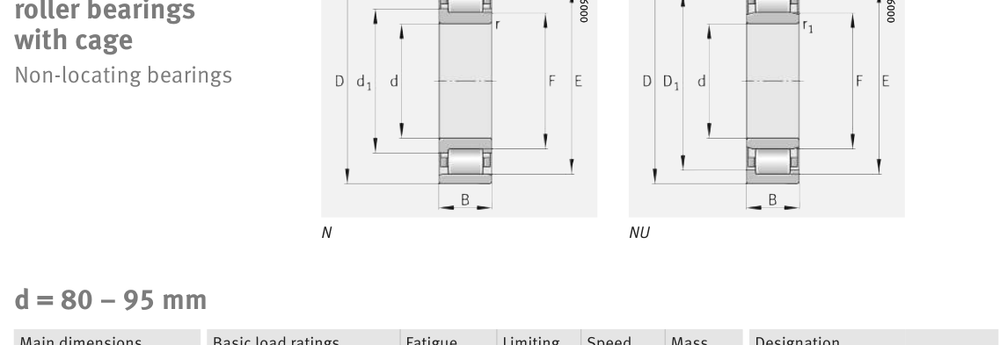

Original catalogue drawing - FAG Schaeffler HR 1, page 440

Scanned from the manufacturer catalogue page listing this part number. All part numbers printed on that table share the same drawing.
Scale cross-section
Blue = inner / outer ring, yellow = rolling element. Drawn to scale from this part's own
dimensions for selection reference only - not a manufacturing or assembly drawing.
Dimension table (mm / inch)
Symbol
Dimension
mm
inch
d
Bore diameter
95
3.7402
D
Outside diameter
170
6.6929
B
Inner-ring / bearing width
32
1.2598
r
Chamfer (min)
2.1
0.0827
E
Roller-set outside dia.
154.5
6.0827
F
Roller-set bore dia.
112.5
4.4291
Notes
Weights are given in kg. Load ratings are shown in both the original catalogue units and the converted value (1 N = 0.2248 lbf). Data is provided for selection reference only - confirm against the latest official catalogue before ordering.
Main dimensions
Bore d (mm)
95
Outside dia. D (mm)
170
Width B (mm)
32
Inner-ring OD d1 (mm)
120.5
Dimension E (mm)
154.5
Dimension F (mm)
112.5
Dimension s (mm)
0.6
Load ratings & speeds
Basic dynamic load rating Cr (lbs)
58450
Basic static load rating Cor (lbs)
59574
Basic dynamic load rating Cr (N)
260000
Basic static load rating C0r (N)
265000
Fatigue limit load Cur (N)
44500
Limiting speed nG (rpm)
4,850
Reference speed nB (rpm)
3,650
Weight
Weight (kg)
2.89
Mounting dimensions (fillets / shoulders)
Housing fillet r max (mm)
2.1
Chamfer r1 min (mm)
2.1
Shaft shoulder da (mm)
107
Housing shoulder Da (mm)
158
Housing shoulder Db (mm)
156
Housing shoulder Dc (mm)
153
Housing fillet ra max (mm)
2.1
Housing fillet ra1 max (mm)
2.1
Bearing life (ISO 281 basic rating life)
C / P
Equivalent load P (N)
L10 (106 rev)
L10h at 1,600 rpm
4
65,000
102
1,058
6
43,333
392
4,089
8
32,500
1,024
10,667
10
26,000
2,154
22,442
15
17,333
8,323
86,703
Basic rating life per ISO 281: L10 = (C/P)10/3 with C = 260,000 N. Hours = L10 x 106 / (60n). Life-modification factors for lubrication, contamination and temperature (aISO) are not included.
Source & traceability
Brand
FAG
Source catalogue
FAG / Schaeffler Rolling Bearings HR 1
Catalogue page
p.440 (dimensions)
Load ratings in newtons, fatigue limit load Cur, limiting speed nG and reference speed nB.
Send us the quantity you need and we will come back with price and
lead time, normally within 24 hours. Equivalent parts from other brands can be quoted at the same time.